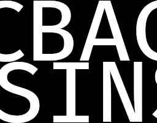

Corrigé Sujet N°1
- Codage RLE d'images -
La bibliothèque
PIL (Pillow) est utilisée.
Installation via CMD :
pip install Pillow
Le Dossier ZIP de l'épreuve pratique N°1 se situe à l'adresse suivante :
https://sujets.examens-concours.gouv.fr/delos/api/file/public/69c4efb8cb85140736350705
https://sujets.examens-concours.gouv.fr/delos/api/file/public/69c4efb8cb85140736350705
La version du fichier Python corrigé est accessible à l'adresse suivante :
https://clem2429.github.io/Correction-Sujets-NSI-2026/corrige/rle_corrige.py
https://clem2429.github.io/Correction-Sujets-NSI-2026/corrige/rle_corrige.py
- Ce sujet est le N°1 de la banque des sujets pratiques de NSI 2026;
- Ce sujet (corrigé) comporte 4 questions ;
- Chaque réponse à une question se trouve sur une page distincte.
Vous pouvez téléchargez les éléments suivants en cliquant sur les boutons associés :
Question 1
Déterminer si la liste obtenue par codage RLE est forcément de longueur inférieure ou égale à la liste de départ.
Non, la liste obtenue par codage RLE n'est pas forcément de longueur inférieure ou égale à la liste de départ. En effet, le codage RLE est efficace pour compresser des séquences de données qui contiennent de nombreuses répétitions, mais dans le cas où les données sont très variées et ne contiennent pas beaucoup de répétitions, le codage RLE peut en réalité augmenter la taille de la liste. Par exemple, si la liste de départ contient des éléments uniques sans répétition, le codage RLE ajoutera des paires (élément, 1) pour chaque élément, ce qui peut rendre la liste codée plus longue que la liste originale. En revanche, si la liste de départ contient de longues séquences de répétitions, le codage RLE peut réduire considérablement la taille de la liste. Par conséquent, l'efficacité du codage RLE dépend fortement de la nature des données à compresser.
Question 2
En étudiant bien la fonction codage_rle qui réalise le codage, écrire le corps de la fonction
decodage_rle qui réalise le décodage d’une liste. Des tests sont fournis dans la fonction test_codage, on pourra les compléter.
def decodage_rle(liste_rle):
'''Renvoie la liste d'octets obtenue à partir de la liste liste_rle obtenue par compression RLE'''
resultat = []
for k in range(0, len(liste_rle), 2):
for i in range(liste_rle[k]):
resultat.append(liste_rle[k+1])
return resultat
def test_codage():
assert codage_rle([255, 255, 0, 255, 255, 255]) == [2, 255, 1, 0, 3, 255], "Echec - test 1"
assert decodage_rle([2, 255, 1, 0, 3, 255]) == [255, 255, 0, 255, 255, 255], "Echec - test 2"
# tests ajoutés :
assert codage_rle([255, 0, 255, 0, 255, 0]) == [1, 255, 1, 0, 1, 255, 1, 0, 1, 255, 1, 0], "Echec - test 3"
assert decodage_rle([1, 255, 1, 0, 1, 255, 1, 0, 1, 255, 1, 0]) == [255, 0, 255, 0, 255, 0], "Echec - test 4"
assert codage_rle([255, 255, 255, 255, 255, 255, 255, 255]) == [8, 255], "Echec - test 5"
assert decodage_rle([8, 255]) == [255, 255, 255, 255, 255, 255, 255, 255], "Echec - test 6"
Question 3
Pour tester le codage sur une image, on peut utiliser la fonction fournie
encoder_decoder_image qui efectue le codage puis le décodage d’une image pour l’enregistrer à nouveau dans un fichier. Utiliser cette fonction sur les images bac_nsi_32.png et bac_nsi_256.png et observer la diférence de comportement.
# Dans votre console, entrez ceci : -puis observez les images ci-dessous affichées-
encoder_decoder_image("bac_nsi_32.png")
encoder_decoder_image("bac_nsi_256.png")

L'image bac_nsi_32.png est une image de petite taille (32x32 pixels). Comme on code sur 255 pixels, aucun problème.
En revanche, l'image bac_nsi_256.png est une image de plus grande taille (256x256 pixels) et coder 256 pixels sur 255 est impossible. Le codage RLE ne peut pas gérer correctement cette image, ce qui entraîne une perte d'information et une image décodée incorrecte.
Question 4
Le problème précédent est lié au fait que sur des grandes images, il est possible d’avoir plus de 255 pixels de la même couleur. Proposer une démarche de résolution de ce problème qui modifie les fonctions d’encodage et de décodage, puis l’implémenter.
# Version corrigée :
def codage_rle(liste_octets):
'''Renvoie une liste d'octets obtenue par compression RLE'''
liste_rle = []
i = 0
while i < len(liste_octets):
c = liste_octets[i]
k = 1
while i+k < len(liste_octets) and liste_octets[i+k] == c:
k += 1
# correction :
q = k//255
r = k%255
for _ in range(q):
liste_rle.append(255)
liste_rle.append(c)
if r != 0:
liste_rle.append(r)
liste_rle.append(c)
i += k
return liste_rle
On a donc modifié
codage_rle afin de gérer les cas où il y a plus de 255 pixels de la même couleur. La fonction divise le nombre de pixels consécutifs (k) par 255 pour obtenir le nombre de blocs complets (q) et le reste (r). Ensuite, elle ajoute q blocs de 255 pixels suivis de la couleur, et si r n'est pas nul, elle ajoute un bloc supplémentaire pour les pixels restants. Cette approche permet de coder correctement les images même lorsque le nombre de pixels consécutifs dépasse 255.
© 2026 - Clément Legoubé